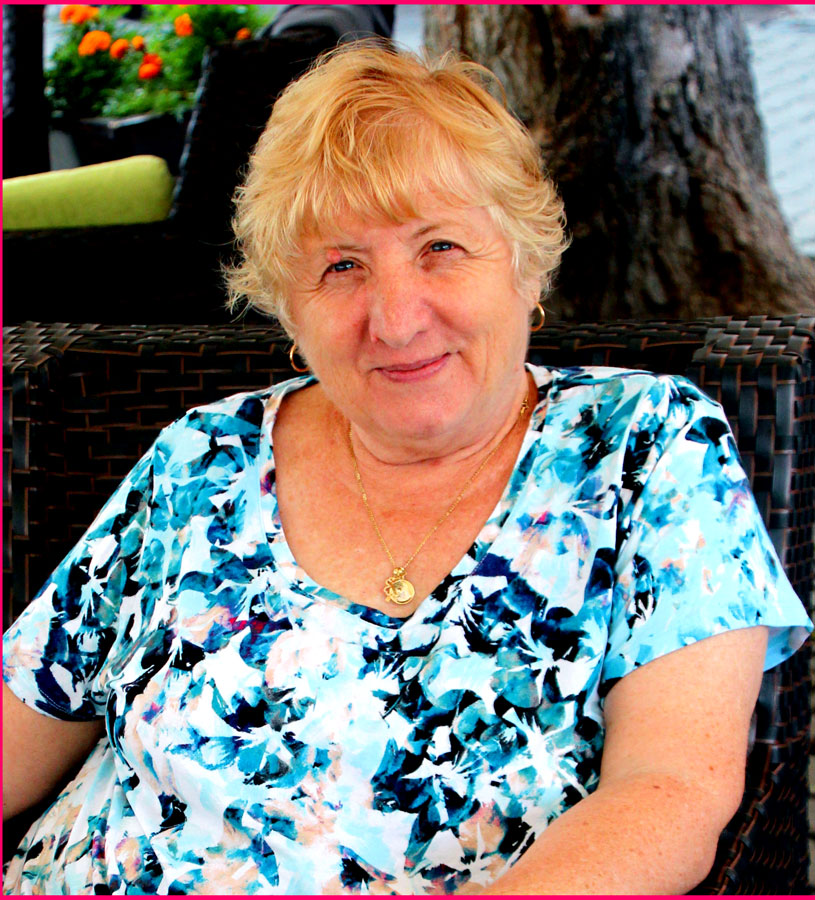
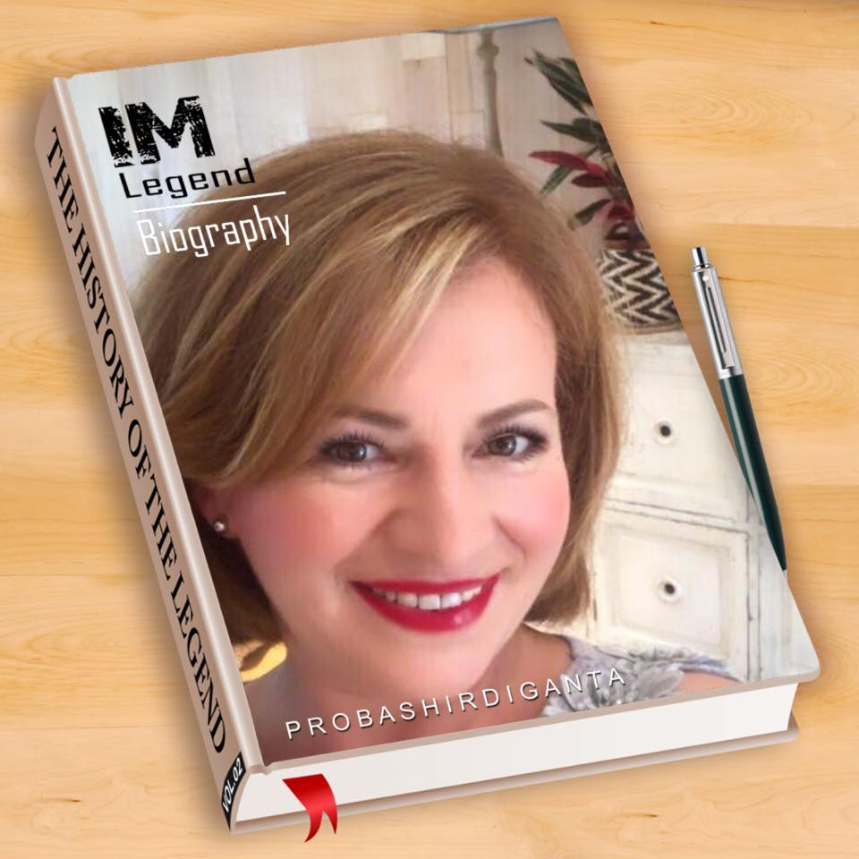
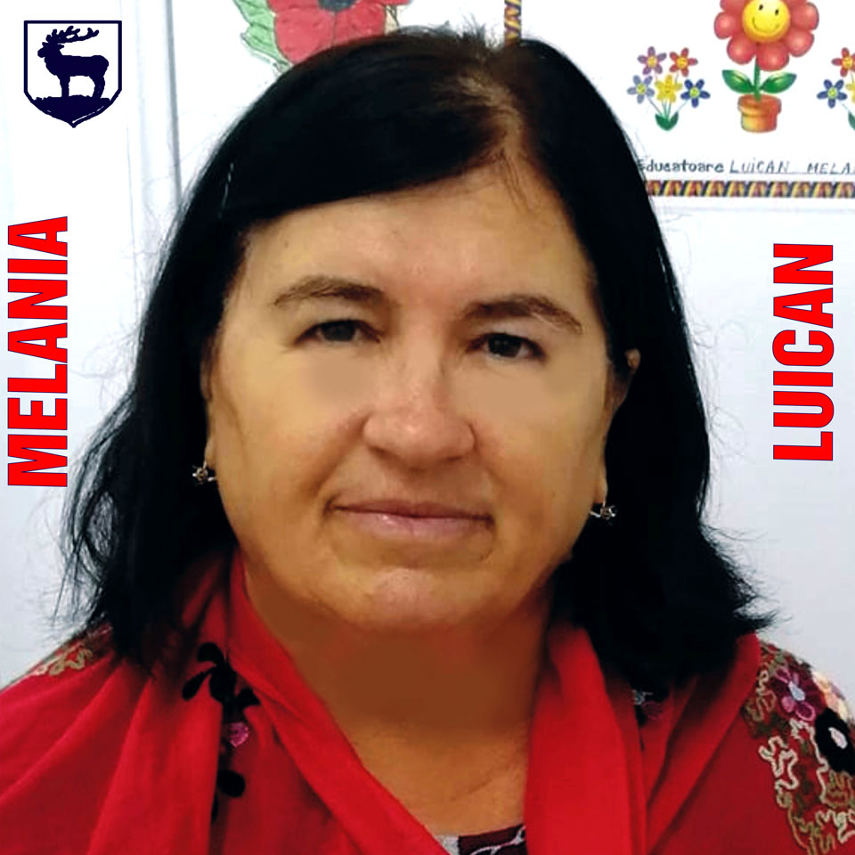
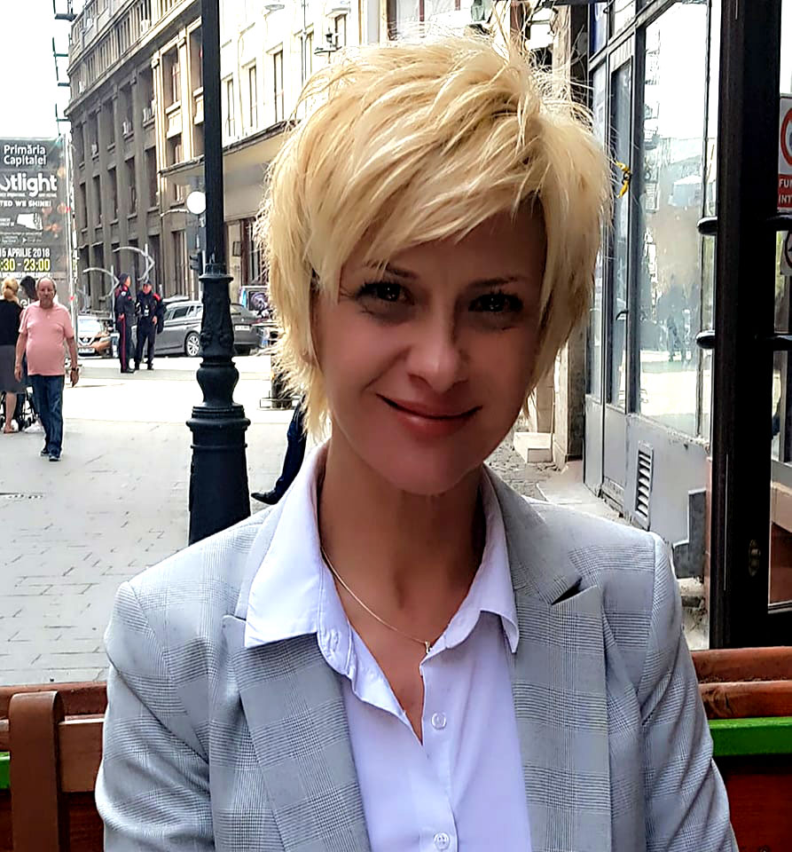
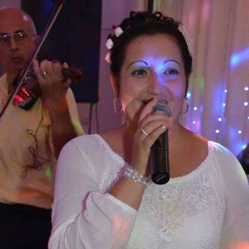
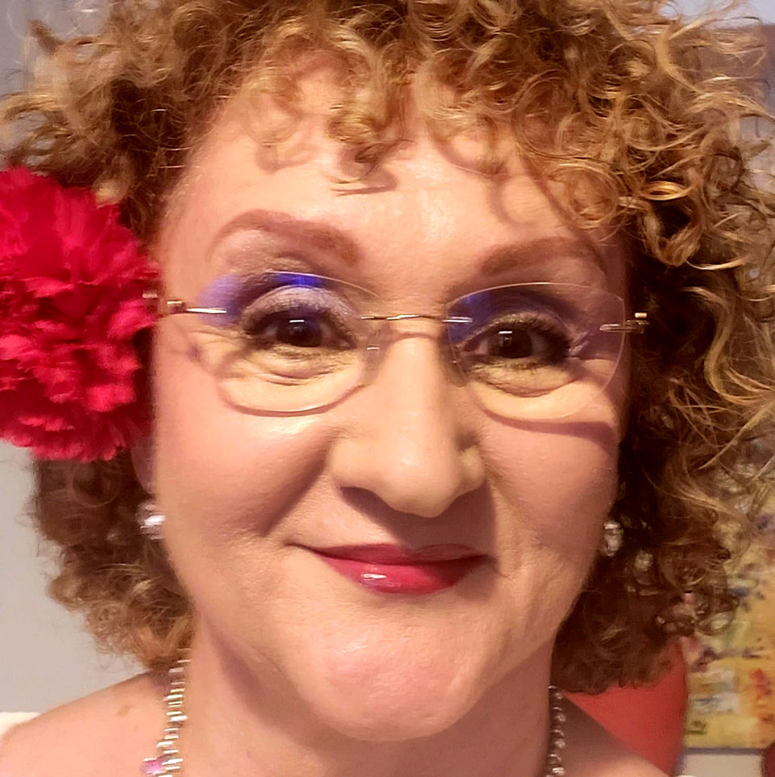
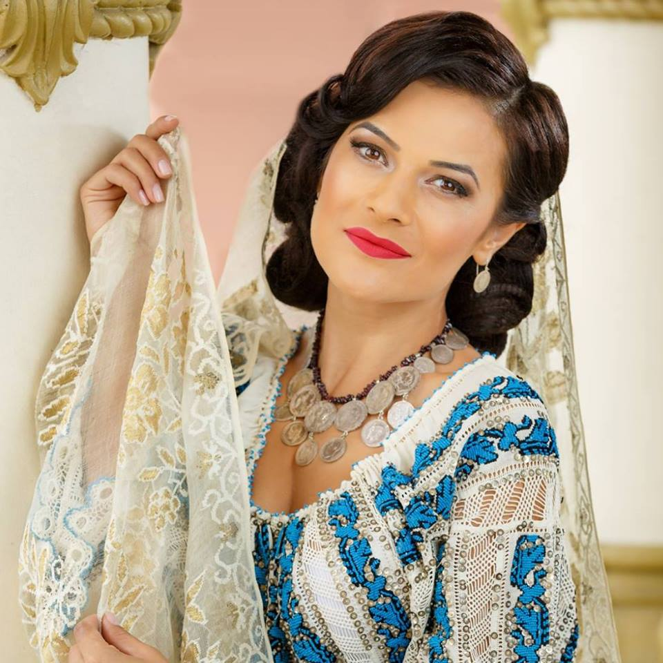
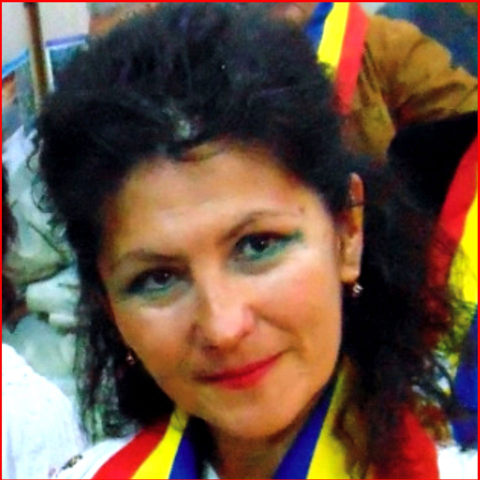

Consiliul Director, Liga Culturala Fiii Gorjului,
Presedinte, Sabin Stamatescu
- Vicepresedinte, Ion Cochina - Membru, Ceausu Emanoil
- Membru, Alexandru Dumitrascu - Membru, Vasile Brancusi
- Membru, Gheorghe Udriste - Membru Nicu Mitroiu
8 Martie
O Floare in Dar Tuturor doamnelor
si domnisoarelor gorjence








